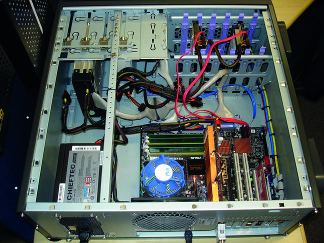
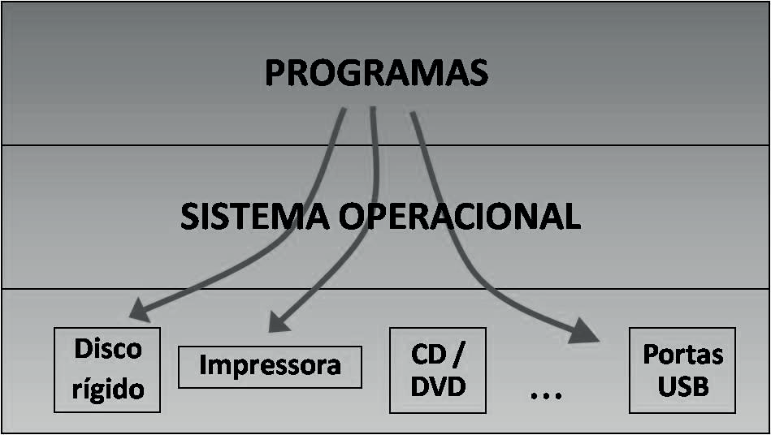
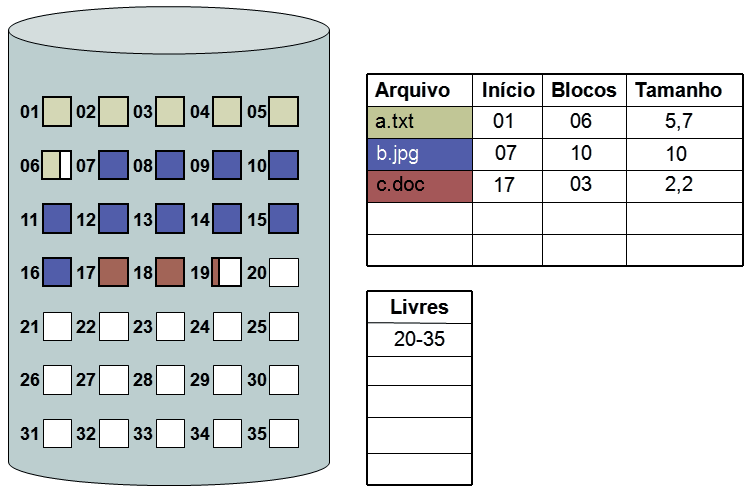

O conhecimento geral de informática é necessário como base para o estudo da Informática Forense. Por esse motivo, alguns conceitos básicos de informática serão apresentados nesta unidade.
A menor unidade de informação que pode ser armazenada ou transmitida é o bit, que pode assumir somente dois estados: 0 (zero) ou 1 (um); verdadeiro ou falso. Como apenas dois estados estão disponíveis, esse sistema numérico é chamado de sistema binário. Vídeos, fotos, músicas, textos, programas e todos os dados e instruções de um computador são, de alguma forma, codificados em 0s e 1s. Um conjunto de 8 (oito) bits é chamado de byte ou octeto. Utilizando um byte, é possível gerar 256 combinações possíveis (: 00000000, 00000001,
00000010 ... 11111110 e 11111111. Em um computador, essas 256 com-
binações podem ser vinculadas a, por exemplo, caracteres de texto: utilizando o padrão de mapeamento mais comum (conhecido como ASCII), o caractere “K” é mapeado para o octeto 01001011; e o caractere “L” é mapeado para o octeto
01001100. O que estará fisicamente gravado no computador serão os bits desses
octetos e não os caracteres “K” e “L” propriamente ditos. Se, ao invés de 2 (sistema binário) ou 10 símbolos (sistema decimal), passarmos a utilizar 16 símbolos, teremos o sistema hexadecimal. Nesse sistema, os símbolos disponíveis são: 0, 1, 2, 3, 4, 5, 6, 7, 8, 9, A, B, C, D, E, F. A notação hexadecimal é utilizada para tornar a representação de valores binários mais amigável para seres humanos. Utilizando essa notação, cada octeto é representado por dois símbolos hexadecimais. Ou seja, cada conjunto de 4 bits é representado por um símbolo hexadecimal. Esse relacionamento funciona perfeitamente, pois existem 16 combinações possíveis para um conjunto de 4 bits. O mapeamento resultante pode ser visto na Tabela 1.
Tabela 1 – Mapeamento de sistemas numéricos
| Decimal | Binário | Hexadecimal |
|---|---|---|
| 00 | 0000 | 0 |
| 01 | 0001 | 1 |
| 02 | 0010 | 2 |
| 03 | 0011 | 3 |
| 04 | 0100 | 4 |
| 05 | 0101 | 5 |
| Decimal | Binário | Hexadecimal |
|---|---|---|
| 06 | 0110 | 6 |
| 07 | 0111 | 7 |
| 08 | 1000 | 8 |
| 09 | 1001 | 9 |
| 10 | 1010 | A |
| 11 | 1011 | B |
| 12 | 1100 | C |
| 13 | 1101 | D |
| 14 | 1110 | E |
| 15 | 1111 | F |
Assim, o caractere “K” (01001011) pode ser representado em hexadecimal por 4B e o caractere “L” (01001100) por 4C. A notação mais aceita atualmente para o agrupamento de bytes são os prefixos (e suas abreviações) do Sistema Internacional de Unidades (SI): kilo (103), mega (106), giga (109), tera (1012), peta (1015) e assim por diante. Por convenção, a letra bê minúscula (‘b’) representa um bit e a letra bê maiúscula (‘B’) representa um byte. Assim, 7kb contém 7.000 bits e 5MB contém 5.000.000 bytes.
Os computadores pessoais funcionam por meio da integração de diversos componentes com funções específicas. Os componentes que formam o conjunto principal de processamento e armazenamento de dados ficam geralmente localizados dentro da estrutura física conhecida como gabinete de computador. Dentro do gabinete, os diversos componentes se conectam a um dispositivo principal conhecido como placa-mãe. Alguns desses componentes internos podem estar integrados à placa-mãe (por questões de projeto, redução de custo e/ou comodidade para o usuário) ou podem ser anexados a ela por conectores e cabos específicos. A vantagem de se ter componentes separados da placa-mãe é a possibilidade de substituição desses dispositivos em caso de falhas ou necessidade de evolução tecnológica. Os principais componentes internos de um computador são:

Figura 1 - Visão interna de um gabinete de computador
É a placa de circuito integrado que interconecta os diversos dispositivos do computador. Possui barramentos e circuitos de apoio para controlar os acessos ao processador, disco rígido, memória RAM e demais dispositivos que estiverem conectados. Realiza também a interface de comunicação com os equipamentos de entrada e saída de dados, como teclado, monitor e mouse. As placas-mãe também contêm um tipo de memória na qual está gravado um pequeno programa conhecido como BIOS (Basic Input Output System), que tem a função de identificar, configurar, testar e inicializar os dispositivos do sistema. Placas de rede ou de vídeo, usualmente, são conectadas à placa-mãe por slots. Quando essas placas também estão integradas à placa-mãe, recebem a denominação on-board. Outros dispositivos, como leitores de DVD, leitores de disquetes e discos rígidos, se conectam à placa-mãe por meio de cabos.
O processador, ou a Unidade Central de Processamento, é o dispositivo responsável pelo processamento de dados e cálculos aritméticos. O termo em inglês para o processador é a sigla CPU (Central Processing Unit), que não deve ser confundida com o gabinete de computador. Fisicamente, o processador (ou CPU) é um pequeno chip de silício que fica encaixado na placa-mãe, localizada no interior do gabinete de computador. Quando um programa é executado, cada uma de suas instruções é executada pelo processador. Dependendo da instrução, o processador pode buscar dados, realizar cálculos ou testes lógicos. Assim, o processador recebe um conjunto de dados (entrada), realiza algum tipo de operação (processamento) e disponibiliza o resultado (saída).
A memória principal, também chamada de memória volátil ou RAM (do termo em inglês Random Access Memory), é a memória utilizada pelo processador para armazenar dados e programas que se encontram em execução. É uma memória rápida e armazena dados somente enquanto o computador está ligado. Fisicamente, são constituídas de pequenas placas de circuito integrado conectadas diretamente à placa-mãe. Quando, comercialmente, se ouve falar de memória para computador, esse é o tipo de memória a que se está referindo. Os computadores atuais possuem capacidade de memória na ordem de gigabytes.
A memória secundária ou auxiliar constitui-se de mídias de armazenamento que mantêm a informação mesmo depois do desligamento da energia elétrica, ou seja, ela é permanente (não volátil). Dados e programas permanecem armazenados na memória secundária e, quando necessários, eles são transportados para a memória principal e, finalmente, utilizados pelo processador. Fisicamente, existem diversas tecnologias que podem ser utilizadas para o armazenamento de dados de forma permanente. Alguns tipos comuns de memória secundária são: a) discos rígidos: o principal dispositivo de memória permanente é o disco rígido (Hard Disk Drive ou, simplesmente, HD da sigla em inglês), devido à sua grande capacidade de armazenamento associada à boa velocidade de leitura e gravação de dados. Normalmente, o disco rígido contém o sistema operacional, os programas instalados e os arquivos criados pelos usuários. Internamente, os dados ficam armazenados em discos magnéticos concêntricos, divididos em trilhas e setores. Há conectores e cabos específicos para conectar esses dispositivos, sendo que os mais comuns são IDE e SATA; b) memórias fl ash: as memórias flash constituem-se de chips semelhantes ao da memória RAM, mas que mantêm os dados persistentes. São utilizadas, por exemplo, em cartões de memória, pen drives, memória interna de celulares e câmeras fotográficas. Os discos de estado sólido (Solid-State Drive ou SSD, da sigla em inglês) utilizam um conjunto de memórias flash para armazenar os dados. Por serem mais rápidos e utilizarem os mesmos cabos, esses discos podem substituir os tradicionais discos rígidos magnéticos. Apesar de mais caros, os SSDs estão se tornando cada vez mais comuns; c) mídias óticas: as mídias óticas (CD, DVD e Blu-Ray) são um tipo de memória permanente bastante utilizada para distribuição em larga escala de software e material de áudio e vídeo. Podem ser utilizadas também como uma opção de baixo custo para a realização de backup de dados. A Tabela 2 apresenta as capacidades usuais de algumas das memórias citadas.
Tabela 2 – Mídias de armazenamento e suas capacidades usuais
| Tipo de mídia | Capacidade usual |
|---|---|
| Disco rígido | 500GB a 30TB |
| SSD | 120GB a 8TB |
| CD | 650MB ou 700MB |
| DVD | 4,7GB ou 8,5GB |
| BD (Blu-ray Disc) | 25GB ou 50GB |
| Pen drive e cartões de memória | 16GB a 2TB |
Os periféricos são dispositivos normalmente localizados fora do gabinete (e por isso possuem esse nome) e têm como função permitir a entrada de dados a serem processados ou fornecer um meio para se obter a saída dos dados resultantes do processamento. Por esse motivo, os periféricos são também conhecidos como dispositivos de entrada e saída (input/output). Podemos destacar os seguintes periféricos: a) entrada: teclado, mouse, scanner, webcam e microfone; b) saída: monitor, impressora e caixas de som; c) entrada e saída: interface de rede, monitor touch-screen e impressora multifuncional.
O sistema operacional é o software que gerencia o acesso aos recursos do computador. Dentre as funcionalidades básicas do sistema operacional, podemos citar: gerência de memória, acesso a dispositivos de entrada e saída de dados, carregamento de outros programas, interface gráfica e gerenciamento do sistema de arquivos. A Figura 2 apresenta um esquema simplificado do posicionamento do sistema operacional em relação aos demais componentes de um computador.

Figura 2 - Estrutura em camadas mostrando o posicionamento do sistema
operacional Dentre os sistemas operacionais mais utilizados atualmente, podemos citar: Microsoft Windows, Mac OS X e Linux. Dispositivos móveis, como smartphones e tablets, também possuem sistemas operacionais, sendo os mais comuns o Android e o iOS (utilizado pelo iPad e iPhone).
Para gravar e ler dados em uma mídia de armazenamento, é preciso que se utilize um método para organizá-los de maneira estruturada. Um sistema de arquivos fornece meios para a gravação e a leitura de arquivos e diretórios. O sistema operacional é o programa responsável por entender o sistema de arquivos e fornecer acesso aos dados para os demais programas. Alguns tipos comuns de sistemas de arquivos são: FAT32 e NTFS (Windows); Ext2, Ext4, ReiserFS (Linux); HFS+ (OS X). De modo a facilitar o gerenciamento dos espaços livres e ocupados, sistemas de arquivos costumam dividir logicamente uma mídia em blocos (ou unidades de alocação). Assim, em vez de ter que gerenciar conjuntos de bits e bytes, o sistema de arquivos lida com pedaços maiores de informação, os blocos, formados geralmente por milhares de bytes. O bloco é a unidade mínima de armazenamento que um arquivo pode ocupar. Mesmo que o arquivo seja muito pequeno, a ele será alocado um bloco inteiro. Quando um arquivo for grande, ele ocupará tantos blocos quanto forem necessários para armazenar seu conteúdo. Para saber quais blocos estão livres e quais estão sendo ocupados, o sistema de arquivos utiliza um mapa de bits. Esse mapa consiste em uma tabela composta por 0s e 1s em que cada bloco corresponde a um bit na tabela. Assim, se o bit correspondente ao enésimo bloco for igual a 1, este bloco estará ocupado (e vice-versa). Sempre que um arquivo novo é criado, o mapa de bits é consultado para saber quais blocos estão livres e, em seguida, o mapa é atualizado para registrar quais blocos foram ocupados pelo arquivo. Processo análogo acontece quando um arquivo é apagado do sistema. Além do mapa de bits, o sistema de arquivos também deve armazenar informações sobre os atributos dos arquivos gravados na mídia. Essas informações são conhecidas como metadados (dados a respeito de dados). Os metadados geralmente incluem informações como o nome do arquivo, datas (de criação, modificação e último acesso) e seu tamanho total. Dependendo do sistema de arquivos utilizado, esses metadados podem estar armazenados de diferentes formas e, em geral, encontram-se estruturados na forma de tabelas, como, por exemplo, na Figura 3.

Figura 3 - Esquema simplifi cado de um sistema de arquivos
Nomes de arquivo podem ser compostos por duas partes: o nome propriamente dito e sua extensão (como em “Apostila.docx”). Em geral, a extensão indica algo sobre o tipo do arquivo e pode estar associada a um determinado programa. Além disso, vários arquivos contêm em seu interior uma sequência de caracteres que identificam seu tipo (como um arquivo do Microsoft Word ou um PDF, por exemplo). Essas sequências de bytes são específicas para cada tipo de arquivo e são conhecidas como assinaturas. As assinaturas podem estar presentes no início e/ou no fim dos arquivos. Normalmente, as assinaturas estão associadas a extensões específicas. Entretanto, nada impede que um arquivo do tipo Microsoft Word seja renomeado para “Apostila.mp3”.
Uma das preocupações da Informática Forense é a preservação dos vestígios digitais, ou seja, manter sua integridade. Manter a integridade de um dado significa garantir que ele não seja alterado e, se, por qualquer motivo, isso acontecer, essa alteração deve ser inequivocamente detectada. O principal mecanismo para garantir a integridade de dados é o cálculo realizado com o uso das funções unidirecionais de resumo(one-way hash functions). As funções de resumosão algoritmos que mapeiam um conjunto de dados de qualquer tamanho em um conjunto de dados de tamanho fixo (chamado de hash). Em outras palavras, dado um conjunto qualquer de entrada, a função de resumo produzirá sempre uma saída de tamanho determinado. A entrada da função pode ser, por exemplo, um arquivo ou uma mensagem (veja a Figura 4). Conjunto de dados de tamanho qualquer Função de Resumo Saída (hash de tamanho fi xo)
Figura 4 – Esquema simplifi cado de uma
função de resumo Uma função de resumo é um algoritmo determinístico, ou seja, uma mesma entrada sempre produzirá uma mesma saída. Por ser uma função unidirecional, de posse do valor do hash, não é possível obter a entrada dos dados, ou seja, a função não pode ser invertida. Além disso, é probabilisticamente improvável que mensagens (ou arquivos) diferentes resultem em um mesmo valor de hash. Assim, o hash de um arquivo pode ser utilizado como se fosse uma sua impressão digital e qualquer alteração no conteúdo original resultará em um novo valor de hash. Exemplificando esse conceito, é possível selecionar dois arquivos diferentes, um com 200 kB e outro com 4 MB, e usar uma mesma função unidirecional de resumo para gerar o hash de cada um desses arquivos. Supondo que a função utilizada gere saídas de 512 bits, ambos os hashes terão esse tamanho, independentemente dos arquivos submetidos a ela. Se, posteriormente, alguém alterar um único bit de algum desses arquivos e submetê-lo novamente à função de hash utilizada, o resultado será completamente diferente, servindo para verificar que a integridade desse arquivo não foi mantida (veja a Figura 5). ENTRADA SAÍDA (hash)
| Lebrel italiano | | Função de resumo | | A46DF50C |
|---|---|---|---|---|
| O pequeno lebrel italiano | Função de resumo | 43AD10E1 | ||
| A pequeno lebrel italiano | Função de resumo | BC31F02E | ||
| O pequeno lebrel italiano | Função de resumo | 43AD10E1 |
Figura 5 – Exemplo de uma função de hash sobre diferentes mensagens de entrada
Dentre os algoritmos mais utilizados para cálculo de hash estão o MD5 (Message Digest 5) e o SHA (Secure Hash Algorithm). O MD5 produz valores de hash com 128 bits e o SHA-256, por exemplo, produz valores de hash de 256 bits. Para ilustrar a segurança existente no uso dessas funções como impressões digitais de arquivos, uma função de hash com saída de apenas 64 bits pode gerar cerca de 18 quintilhões (264) de valores de hashes diferentes. Várias ferramentas podem ser usadas para calcular e verificar hashes. Entre os aplicativos gratuitos para a plataforma Windows, podemos citar o MD5Summer (www.md5summer.org) – destacado pela facilidade de uso e simplicidade – e o FSUM (www.slavasoft.com/fsum).